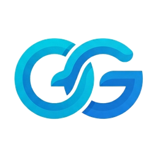

1
Чистый старт
На стартовой странице только логотип и строка поиска.
GGIPES открывается на чистой странице: логотип и поиск. Никаких плиток, новостей и погоды.

GGIPESВсё, что нужно для работы в сети, и ничего сверху.
На стартовой странице только логотип и строка поиска.
Другой поисковик выбирается в настройках.
Сайты открываются так же, как в привычных браузерах.
Тёмная тема, стекло и мягкие акценты. Свой стиль без чужих логотипов.
Версии для macOS и Linux готовятся. Следите за вкладкой «Релизы».